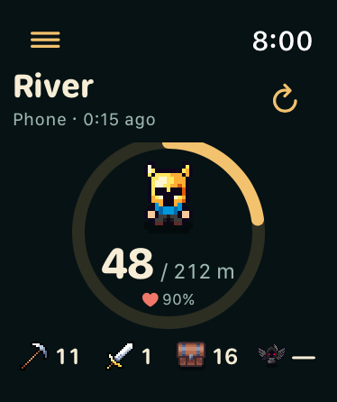
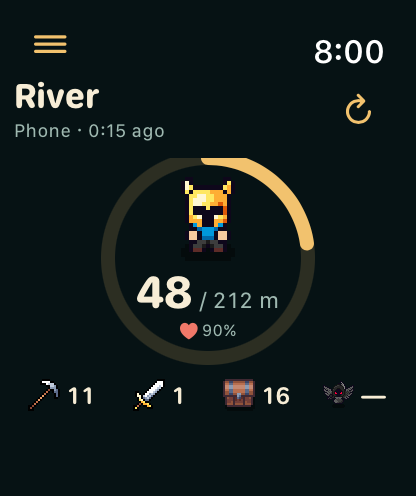
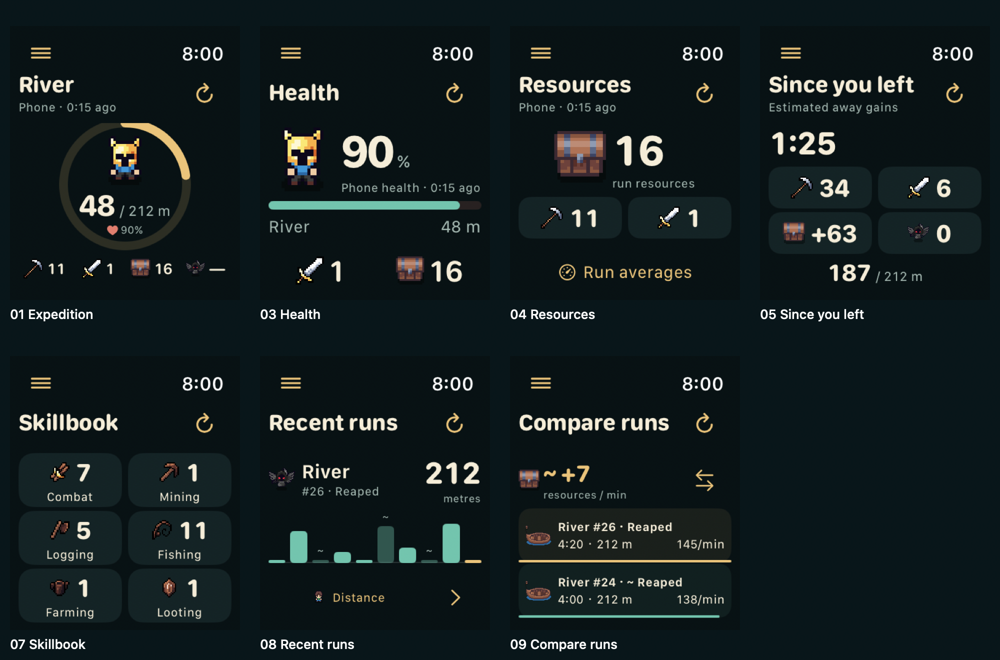

Watch companion
Seven selected screens, rendered from the integrated SwiftUI views in the 42 mm and 46 mm simulators.
Expedition dial
Distance dial with your saved character. Tap the dial to switch its main metric.




Screenshots use controlled snapshots to render the production views. The real app reads WatchConnectivity snapshots and the Watch clock.
Fresh phone values arrive while the game is active. Background estimates advance locally until their saved limit. Refresh asks the phone for new data; it cannot wake suspended Unity.
Integrated on the review branch. Not uploaded to TestFlight; build 188 is unchanged.
All seven screens
Select a screen above for the full-size pair.
